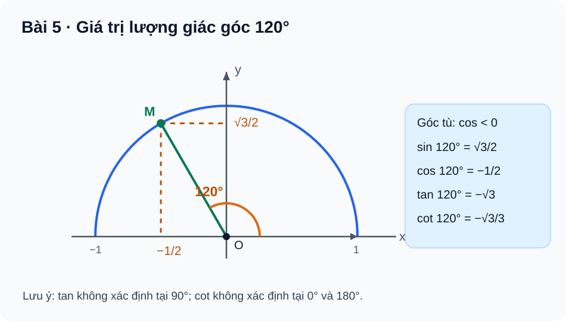

Bài 5. Giá trị lượng giác của một góc từ 0° đến 180°
TOÁN 10 · CHƯƠNG III · KIẾN THỨC SGK KNTT
Học kiến thức và ví dụ theo Bài 5, sau đó tự luyện.
Trước khi học — hiểu ý nghĩa trước khi nhớ quy tắc
Em hãy đọc tình huống, nhắc lại kiến thức đã học và tự trả lời từng câu Tự thử trước khi đọc phần công thức. Chỉ mở lời giải sau khi em đã tự làm. Nếu gặp khó khăn, xem mục hỗ trợ của bài rồi mới luyện Core/Luyện tập. Hoạt động này không chấm điểm hay ghi mức độ thành thạo.
Góc và nửa đường tròn đơn vị
Vì sao cần học? Khi một bán kính quay trên mặt phẳng, làm sao nói chính xác đầu bán kính nằm lệch sang trái hay lên cao mà không cần đo bằng mắt? Các tọa độ cho ta ngôn ngữ để mô tả hướng và dự đoán dấu của lượng giác.
Em đã biết gì? Nhắc lại hệ trục tọa độ Oxy, nửa mặt phẳng phía trên có tung độ không âm, bán kính đường tròn đơn vị bằng 1. Điểm trên đường tròn thỏa x²+y²=1. Góc đo từ Ox dương theo chiều ngược kim đồng hồ.
Hiểu bản chất trước công thức Hãy tưởng tượng đầu bán kính đi từ (1,0) theo nửa đường tròn phía trên. Tọa độ ngang x biểu diễn cos α, tọa độ đứng y biểu diễn sin α; chính hình chiếu giải thích hai giá trị, không phải công thức cần học thuộc trước. Sau khi thấy x,y mới ghi cos α=x và sin α=y, với 0°≤α≤180°.
Cách đọc hình và hình dung Ở hình minh họa bên dưới, tìm O, Ox, M ứng với góc 120°. Đọc đường dóng từ M xuống hai trục: M nằm bên trái Oy nên hoành độ âm, ở trên Ox nên tung độ dương. Với α=180°, đầu bán kính nằm chính trên trục Ox âm.
Vì sao làm theo cách này? Nếu đề hỏi sin/cos của một góc và có thể hình dung điểm M, xác định vị trí và dấu tọa độ trước; chưa cần tính tan/cot. Cách này bị giới hạn ở mô hình đã chọn 0°–180°, không tùy tiện suy ra giá trị theo chiều quay khác.
Tự thử trước Core Trên nửa đường tròn đơn vị, khi α=180°, điểm M có tọa độ gì? Từ đó xác định sin α, cos α và giải thích bằng hình chiếu.
Em đã tự thử? Mở lời giải để đối chiếu
**Lời giải và giải thích.** M=(-1,0); sin180°=0, cos180°=-1. M ở trên Ox âm nên tung độ bằng 0, hoành độ bằng -1. **Nếu chưa đúng:** Xem lại mục Hỗ trợ khắc phục lỗi ở cuối bài, thử nhắc lại bản chất bằng lời của mình rồi làm câu liên kết câu Core/Luyện tập tương ứng; phần sau này là luyện tập tự nguyện, không là kiểm tra độc lập.Các góc đặc biệt
Vì sao cần học? Vì sao hai góc nhìn rất khác nhau như 45° và 135° có cùng độ cao trên nửa đường tròn, nhưng hướng ngang trái/ngược nhau? Hiểu sự đối xứng giúp nhớ các giá trị đặc biệt thay vì học hai bảng rời rạc.
Em đã biết gì? Nhắc lại sin45°=cos45°=√2/2 từ tam giác vuông cân. Hai điểm đối xứng qua trục Oy có cùng tung độ và hoành độ trái dấu.
Hiểu bản chất trước công thức Góc 135° là ảnh đối xứng của 45° qua Oy. Vì vậy sin135°=sin45° còn cos135°=-cos45°. Các góc đặc biệt 120°, 150° cũng được hiểu từ góc nhọn tham chiếu 60°, 30°; ghi bảng sau khi giải thích đối xứng.
Cách đọc hình và hình dung Ở hình minh họa bên dưới, nhận xét điểm ứng với góc tù ở bên trái Oy. Vẽ tưởng tượng đường ngang nối hai điểm cùng độ cao để thấy sin không đổi và cos đổi dấu.
Vì sao làm theo cách này? Nhận góc tham chiếu nhọn (30°,45°,60°) và dấu theo vùng trên nửa đường tròn trước khi thế vào bảng; không tự cho cos góc tù dương vì độ lớn cos vẫn nhỏ hơn 1.
Tự thử trước Core Không dùng máy tính, tính sin135° và cos135°. Hai giá trị này khác sin45°, cos45° về dấu như thế nào?
Em đã tự thử? Mở lời giải để đối chiếu
**Lời giải và giải thích.** sin135°=√2/2; cos135°=-√2/2. So với 45°, sin giữ nguyên, cos đổi dấu do đối xứng qua Oy. **Nếu chưa đúng:** Xem lại mục Hỗ trợ khắc phục lỗi ở cuối bài, thử nhắc lại bản chất bằng lời của mình rồi làm câu liên kết câu Core/Luyện tập tương ứng; phần sau này là luyện tập tự nguyện, không là kiểm tra độc lập.Dấu và điều kiện xác định
Vì sao cần học? Nếu ta lấy độ dốc của một hướng bằng “độ cao chia độ lệch ngang”, điều gì xảy ra khi độ lệch ngang bằng 0? Đó là lí do tan/cot phải có điều kiện xác định, không thể suy chúng luôn là những con số.
Em đã biết gì? Nhắc lại phép chia không được có mẫu bằng 0. Trên nửa đường tròn đơn vị sin≥0, cos có thể âm, bằng 0 hoặc dương tùy góc.
Hiểu bản chất trước công thức Tan α là tỉ số sin α/cos α, chỉ có nghĩa nếu cos α≠0; cot α là cos α/sin α, chỉ có nghĩa nếu sin α≠0. Khái niệm miền xác định phải có trước thao tác chia. Tan/cot có thể bằng 0 khi tử bằng 0 và mẫu khác 0.
Cách đọc hình và hình dung Dùng hình minh họa bên dưới để đọc hai trục và hình dung tại 0° thì M=(1,0), tại 90° thì M=(0,1). Với x=0, không thể lấy y/x; với y=0, không thể lấy x/y.
Vì sao làm theo cách này? Muốn tính tan/cot, xét mẫu trước rồi mới lập tỉ số; dấu của tan/cot là dấu của thương. Không nhầm “không xác định” với số 0.
Tự thử trước Core Trong bốn giá trị tan0°, cot0°, tan90°, cot90°, giá trị nào bằng 0 và giá trị nào không xác định? Giải thích bằng mẫu số.
Em đã tự thử? Mở lời giải để đối chiếu
**Lời giải và giải thích.** tan0°=0/1=0; cot0°=1/0 không xác định; tan90°=1/0 không xác định; cot90°=0/1=0. **Nếu chưa đúng:** Xem lại mục Hỗ trợ khắc phục lỗi ở cuối bài, thử nhắc lại bản chất bằng lời của mình rồi làm câu liên kết câu Core/Luyện tập tương ứng; phần sau này là luyện tập tự nguyện, không là kiểm tra độc lập.Hai góc bù nhau
Vì sao cần học? Khi quay một hướng từ 40° sang 140°, điểm trên đường tròn đổi bên trái/phải nhưng vẫn giữ nguyên độ cao. Ta có thể tính hoặc so sánh lượng giác góc tù từ góc nhọn đã biết mà không học thuộc công thức mới một cách rời rạc.
Em đã biết gì? Nhắc lại hai góc bù có tổng 180° và phép phản xạ qua trục Oy giữ nguyên tung độ, đổi dấu hoành độ.
Hiểu bản chất trước công thức Đối với góc β=180°−α, hai điểm trên nửa đường tròn đối xứng qua Oy. Vì vậy sin β=sin α và cos β=−cos α. Tan, cot đổi dấu khi các tỉ số có nghĩa; phải xét mẫu số trước.
Cách đọc hình và hình dung Đọc cặp điểm ở 40°/140° đối xứng qua Oy trên nửa đường tròn; nêu bằng lời vì sao đường dóng ngang có cùng độ cao, còn đường dóng dọc nằm hai phía Oy.
Vì sao làm theo cách này? Nhận diện tổng 180° trước, đổi dấu chỉ những hàm có thay đổi dấu; kiểm tra miền xác định trước khi dùng công thức tan/cot. Không áp dụng tùy tiện cho tổng góc không bằng 180°.
Tự thử trước Core Hai góc 40° và 140° có các quan hệ nào giữa sin, cos, tan và cot? Có cần tính số thập phân để kết luận không?
Em đã tự thử? Mở lời giải để đối chiếu
**Lời giải và giải thích.** sin140°=sin40°; cos140°=−cos40°; tan140°=−tan40°; cot140°=−cot40°. Không cần số thập phân; tan/cot xác định ở cả hai góc này. **Nếu chưa đúng:** Xem lại mục Hỗ trợ khắc phục lỗi ở cuối bài, thử nhắc lại bản chất bằng lời của mình rồi làm câu liên kết câu Core/Luyện tập tương ứng; phần sau này là luyện tập tự nguyện, không là kiểm tra độc lập.Hệ thức lượng giác
Vì sao cần học? Nếu biết chỉ thành phần ngang của một hướng, ta có thể suy thành phần đứng từ độ dài bán kính 1 hay không? Hệ thức lượng giác là hệ quả của Pitago, nhưng vẫn cần thông tin vị trí để chọn dấu.
Em đã biết gì? Nhắc lại x²+y²=1 của đường tròn đơn vị và Pitago; căn bậc hai của một bình phương có thể cho hai dấu. Với góc tù trên (90°,180°), sin>0, cos<0.
Hiểu bản chất trước công thức Thay x=cos α, y=sin α vào x²+y²=1, suy ra sin²α+cos²α=1. Khi biết cos α, tính độ lớn sin rồi dùng nửa đường tròn để chọn dấu; không suy sin âm trên miền góc của bài.
Cách đọc hình và hình dung Từ M ở nửa trái đường tròn, dựng tam giác vuông tới các trục: bình phương hai cạnh góc vuông cộng lại bằng 1. Hướng đứng của M dương dù hướng ngang âm.
Vì sao làm theo cách này? Sử dụng Pitago khi có một sin/cos đã biết; chọn dấu từ khoảng góc; tính tan cuối cùng khi cos khác 0. Không lấy căn dương cho cos góc tù chỉ vì là căn bậc hai.
Tự thử trước Core Góc tù α có cosα=−5/13. Tìm sinα và tanα, kèm lí do chọn dấu.
Em đã tự thử? Mở lời giải để đối chiếu
**Lời giải và giải thích.** sin²α=1−25/169=144/169. Góc tù có sin>0 nên sinα=12/13; tanα=(12/13)/(−5/13)=−12/5. **Nếu chưa đúng:** Xem lại mục Hỗ trợ khắc phục lỗi ở cuối bài, thử nhắc lại bản chất bằng lời của mình rồi làm câu liên kết câu Core/Luyện tập tương ứng; phần sau này là luyện tập tự nguyện, không là kiểm tra độc lập.1. Kiến thức
Định nghĩa trên nửa đường tròn đơn vị
Cho 0° ≤ α ≤ 180°. Điểm M(x,y) trên nửa đường tròn đơn vị tâm O, từ tia Ox quay góc α ngược chiều kim đồng hồ, xác định cos α = x, sin α = y và x²+y²=1, y≥0. Sin luôn không âm; cos dương với góc nhọn, bằng 0 tại 90°, âm với góc tù.
tan 90° không xác định; cot 0° và cot 180° không xác định. sin, cos xác định trên toàn đoạn 0°–180°. Trên góc tù 90°–180°, cả tan và cot (khi có nghĩa) đều âm.
Giá trị đặc biệt
| α | 0° | 30° | 45° | 60° | 90° | 120° | 135° | 150° | 180° |
|---|---|---|---|---|---|---|---|---|---|
| sin α | 0 | 1/2 | √2/2 | √3/2 | 1 | √3/2 | √2/2 | 1/2 | 0 |
| cos α | 1 | √3/2 | √2/2 | 1/2 | 0 | −1/2 | −√2/2 | −√3/2 | −1 |
Với tan/cot, dùng tỷ số sin/cos chỉ khi mẫu khác 0; không ghi một số tại ô không xác định. SBT p.29–30 cung cấp bảng và những ví dụ góc đặc biệt; ở đây nêu tối thiểu các hàng sin/cos để học sinh tránh học thuộc tan/cot sai điều kiện.
Góc bù
Với hai góc bù α và 180°−α:
Hai đẳng thức có tan và cot chỉ dùng khi vế tương ứng đều xác định. Đây không phải công thức sin/cos của tổng hai góc bất kỳ; không đưa nội dung công thức cộng Toán 11 vào Core.
Hệ thức cơ bản và dấu
Khi sin α ≠ 0 và cos α ≠ 0, có tan α·cot α=1. Biết một giá trị sin/cos cần xét góc nhọn hay tù để chọn dấu căn còn lại.
2. Ví dụ
Ví dụ 1 — Góc 120°: 120°=180°−60°, do đó
\(\sin120^\circ=\sqrt3/2\), \(\cos120^\circ=-1/2\), \(\tan120^\circ=-\sqrt3\), \(\cot120^\circ=-\sqrt3/3\). Cos âm vì góc tù; hai tỷ số đều có nghĩa.
Ví dụ 2 — Biết sin và biết góc tù: Cho góc tù α với sin α=3/5. Từ sin²+cos²=1 suy cos²=16/25; chọn cos α=−4/5 vì góc tù, và tan α=−3/4. Lỗi thường gặp: dùng căn dương mà không xét miền của α.
Ví dụ 3 — Tính biểu thức góc bù: sin150°+cos150° = 1/2−√3/2=(1−√3)/2. Trước khi thay giá trị, nhận ra 150°=180°−30°, sin giữ nguyên, cos đổi dấu.
3. Hình minh họa

4. Tự khắc phục lỗi thường gặp
Nhầm dấu góc tù và hai góc bù
- Dấu hiệu: Chọn cos120° dương hoặc cos150° bằng cos30°.
- Chẩn đoán: Học sinh nhớ bảng góc nhọn nhưng bỏ nửa đường tròn phía trái trục Oy.
- Bản chất: `sin(180°−α)=sinα`, `cos(180°−α)=−cosα`; điểm M góc tù nằm phía trái, tung độ dương.
- Tự sửa: Vẽ M góc 120° trên FIG-G10-B05-01, đọc hoành/tung; giải lại không nhìn đáp án.
Bỏ điều kiện tan/cot và chọn sai dấu căn
- Dấu hiệu: Tính tan90° bằng 0; viết cot0° là vô hạn; cho cos góc tù dương khi biết sin.
- Chẩn đoán: Bỏ mẫu của tỷ số sin/cos và không sử dụng miền của góc.
- Bản chất: Tan chỉ xác định nếu cos≠0, cot nếu sin≠0; `sin²+cos²=1` cho hai dấu căn nhưng miền góc quyết định dấu.
- Tự sửa: Kiểm tra mẫu và dấu trước khi thế số; tự đối chiếu từng bước.